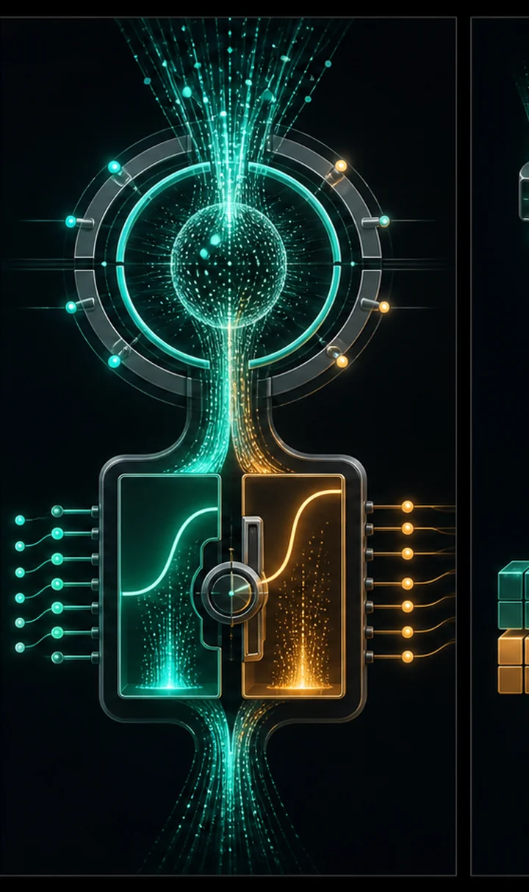
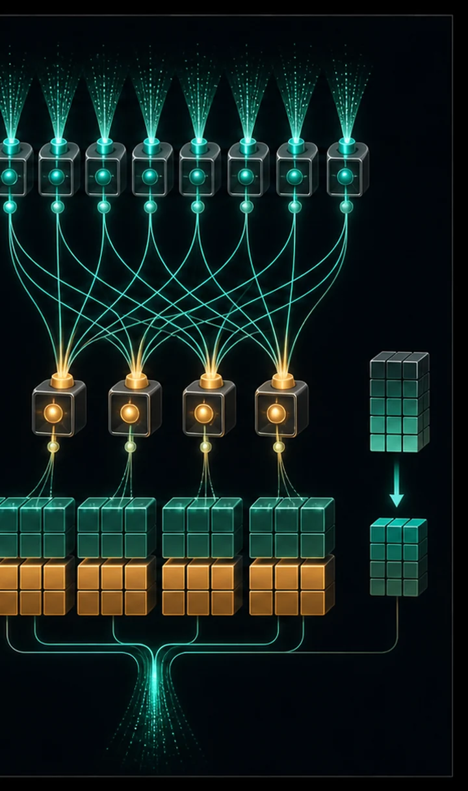

Our #09 GPT is the classic 2017 transformer. Frontier open models (Llama, Mistral, Qwen, DeepSeek, Gemma) have converged on four upgrades: RoPE rotary positions, RMSNorm, SwiGLU gated feed-forwards, and GQA grouped-query attention.
Same training data and loop as #09 — but it reaches a better validation loss (1.634 vs 1.674) with fewer parameters (418K vs 465K). That efficiency is why the whole field switched. This is, in miniature, a 2026 model.
Four refinements separate a 2017 transformer from a 2026 one. RoPE encodes position by rotating the query and key vectors by an angle proportional to their position; because a rotation's dot product depends only on the relative offset, the model generalizes to longer contexts and needs no learned position table. RMSNorm drops LayerNorm's mean-subtraction and bias, normalizing by the root-mean-square alone — cheaper, equally stable.
SwiGLU replaces the ReLU feed-forward with a gated unit: one branch decides ‘how much’ and multiplies the other, giving more expressive power per parameter. GQA (grouped-query attention) lets several query heads share one set of key/value heads, interpolating between full multi-head (best quality) and multi-query (smallest cache). Together they reach a lower loss with fewer parameters — which is exactly why the whole field adopted them.



import importlib.util
import os
import torch
import torch.nn as nn
import torch.nn.functional as F
# Reuse data + tokenizer + train/eval helpers from #9.
spec = importlib.util.spec_from_file_location("tiny_gpt", "09_tiny_gpt.py")
tg = importlib.util.module_from_spec(spec)
spec.loader.exec_module(tg)
torch.manual_seed(1337)
DEVICE = tg.DEVICE
VOCAB = tg.VOCAB
# ---- Hyperparameters (head_dim must be even for RoPE) ----
BLOCK_SIZE = tg.BLOCK_SIZE # 64, matching #9
N_EMBD = 96
N_HEAD = 4 # query heads -> head_dim = 24
N_KV_HEAD = 2 # key/value heads -> GQA shares them 2:1
N_LAYER = 4
MAX_ITERS = 2000
LEARNING_RATE = 3e-3
EVAL_INTERVAL = 250
CKPT_PATH = "modern_gpt.pt"
HEAD_DIM = N_EMBD // N_HEAD
# --------------------------------------------------------------------------
# 1. RoPE — rotate q/k by a position-dependent angle
# --------------------------------------------------------------------------
def build_rope_cache(seq_len, head_dim, theta=10000.0):
inv_freq = 1.0 / (theta ** (torch.arange(0, head_dim, 2).float() / head_dim))
positions = torch.arange(seq_len).float()
freqs = torch.outer(positions, inv_freq) # (T, head_dim/2)
emb = torch.cat([freqs, freqs], dim=-1) # (T, head_dim)
return emb.cos(), emb.sin()
def rotate_half(x):
half = x.shape[-1] // 2
x1, x2 = x[..., :half], x[..., half:]
return torch.cat([-x2, x1], dim=-1)
def apply_rope(x, cos, sin):
# x: (B, n_heads, T, head_dim); cos/sin: (T, head_dim)
return x * cos[None, None] + rotate_half(x) * sin[None, None]
# --------------------------------------------------------------------------
# 2. RMSNorm
# --------------------------------------------------------------------------
class RMSNorm(nn.Module):
def __init__(self, dim, eps=1e-5):
super().__init__()
self.weight = nn.Parameter(torch.ones(dim))
self.eps = eps
def forward(self, x):
rms = torch.rsqrt(x.pow(2).mean(-1, keepdim=True) + self.eps)
return x * rms * self.weight
# --------------------------------------------------------------------------
# 3. SwiGLU feed-forward
# --------------------------------------------------------------------------
class SwiGLU(nn.Module):
def __init__(self, n_embd):
super().__init__()
hidden = int(8 / 3 * n_embd) # keeps params ~ a 4x ReLU MLP
self.gate = nn.Linear(n_embd, hidden, bias=False)
self.up = nn.Linear(n_embd, hidden, bias=False)
self.down = nn.Linear(hidden, n_embd, bias=False)
def forward(self, x):
return self.down(F.silu(self.gate(x)) * self.up(x))
# --------------------------------------------------------------------------
# 4. Grouped-Query Attention with RoPE
# --------------------------------------------------------------------------
class GroupedQueryAttention(nn.Module):
def __init__(self):
super().__init__()
self.q_proj = nn.Linear(N_EMBD, N_HEAD * HEAD_DIM, bias=False)
self.k_proj = nn.Linear(N_EMBD, N_KV_HEAD * HEAD_DIM, bias=False)
self.v_proj = nn.Linear(N_EMBD, N_KV_HEAD * HEAD_DIM, bias=False)
self.o_proj = nn.Linear(N_HEAD * HEAD_DIM, N_EMBD, bias=False)
self.register_buffer("mask", torch.tril(torch.ones(BLOCK_SIZE, BLOCK_SIZE)))
def forward(self, x, cos, sin):
B, T, _ = x.shape
# Project, then split into heads. Note: fewer K/V heads than Q heads.
q = self.q_proj(x).view(B, T, N_HEAD, HEAD_DIM).transpose(1, 2)
k = self.k_proj(x).view(B, T, N_KV_HEAD, HEAD_DIM).transpose(1, 2)
v = self.v_proj(x).view(B, T, N_KV_HEAD, HEAD_DIM).transpose(1, 2)
# RoPE rotates queries and keys by their position.
q, k = apply_rope(q, cos, sin), apply_rope(k, cos, sin)
# GQA: replicate each K/V head to serve a GROUP of query heads.
groups = N_HEAD // N_KV_HEAD
k = k.repeat_interleave(groups, dim=1) # -> (B, N_HEAD, T, HEAD_DIM)
v = v.repeat_interleave(groups, dim=1)
att = (q @ k.transpose(-2, -1)) / HEAD_DIM ** 0.5
att = att.masked_fill(self.mask[:T, :T] == 0, float("-inf"))
att = F.softmax(att, dim=-1)
out = att @ v # (B, N_HEAD, T, HEAD_DIM)
out = out.transpose(1, 2).contiguous().view(B, T, N_HEAD * HEAD_DIM)
return self.o_proj(out)
class Block(nn.Module):
"""Pre-norm block: RMSNorm -> sublayer -> residual add (Llama-style)."""
def __init__(self):
super().__init__()
self.attn_norm = RMSNorm(N_EMBD)
self.attn = GroupedQueryAttention()
self.ffn_norm = RMSNorm(N_EMBD)
self.ffn = SwiGLU(N_EMBD)
def forward(self, x, cos, sin):
x = x + self.attn(self.attn_norm(x), cos, sin)
x = x + self.ffn(self.ffn_norm(x))
return x
class ModernGPT(nn.Module):
def __init__(self):
super().__init__()
self.token_emb = nn.Embedding(VOCAB, N_EMBD) # NO position table — RoPE!
self.blocks = nn.ModuleList([Block() for _ in range(N_LAYER)])
self.norm = RMSNorm(N_EMBD)
self.head = nn.Linear(N_EMBD, VOCAB, bias=False)
cos, sin = build_rope_cache(BLOCK_SIZE, HEAD_DIM)
self.register_buffer("cos", cos)
self.register_buffer("sin", sin)
def forward(self, idx, targets=None):
B, T = idx.shape
x = self.token_emb(idx)
cos, sin = self.cos[:T], self.sin[:T]
for block in self.blocks:
x = block(x, cos, sin)
logits = self.head(self.norm(x))
loss = None
if targets is not None:
loss = F.cross_entropy(logits.view(-1, VOCAB), targets.view(-1))
return logits, loss
@torch.no_grad()
def generate(self, idx, max_new_tokens):
for _ in range(max_new_tokens):
logits, _ = self(idx[:, -BLOCK_SIZE:])
probs = F.softmax(logits[:, -1, :], dim=-1)
idx = torch.cat([idx, torch.multinomial(probs, 1)], dim=1)
return idxmodel = ModernGPT().to(DEVICE)
n_params = sum(p.numel() for p in model.parameters())
print(f"device: {DEVICE} | parameters: {n_params:,}")
print(f"RoPE + RMSNorm + SwiGLU + GQA "
f"({N_HEAD} query heads share {N_KV_HEAD} kv heads)\n")
if os.path.exists(CKPT_PATH):
model.load_state_dict(torch.load(CKPT_PATH, map_location=DEVICE)["model"])
print(f"loaded {CKPT_PATH} (delete it to retrain)\n")
else:
optimizer = torch.optim.AdamW(model.parameters(), lr=LEARNING_RATE)
for it in range(MAX_ITERS + 1):
if it % EVAL_INTERVAL == 0:
losses = tg.estimate_loss(model)
print(f"iter {it:4d} train {losses['train']:.3f} "
f"val {losses['val']:.3f}")
x, y = tg.get_batch(tg.train_data)
_, loss = model(x, y)
optimizer.zero_grad(set_to_none=True)
loss.backward()
optimizer.step()
torch.save({"model": model.state_dict(), "chars": tg.chars}, CKPT_PATH)
print(f"\nsaved -> {CKPT_PATH}")
print("\n=== Generated Shakespeare (modern architecture) ===\n")
start = torch.zeros((1, 1), dtype=torch.long, device=DEVICE)
print(tg.decode(model.generate(start, max_new_tokens=500)[0].tolist()))device: cpu | parameters: 418,848 RoPE + RMSNorm + SwiGLU + GQA (4 query heads share 2 kv heads) loaded modern_gpt.pt (delete it to retrain) === Generated Shakespeare (modern architecture) === Nursed Camillo? leave moin woman that armed. ANORD: Do you keep'd is by; but so, what lieve's will, To benrise to crosp; t$o defend the lands with cruest With sacredam and unsave, and be these princess, But by spark'd wrance. O. pray the put, And think of my cope thee become you wrange; And my knee base full of nursed dog now. Your else thou shalt Angelo speak.' KING RICHARD II: Raster leave you forth, my grows for me Faymild from themselves, calt in the cosh thou, To rators of you to kindly